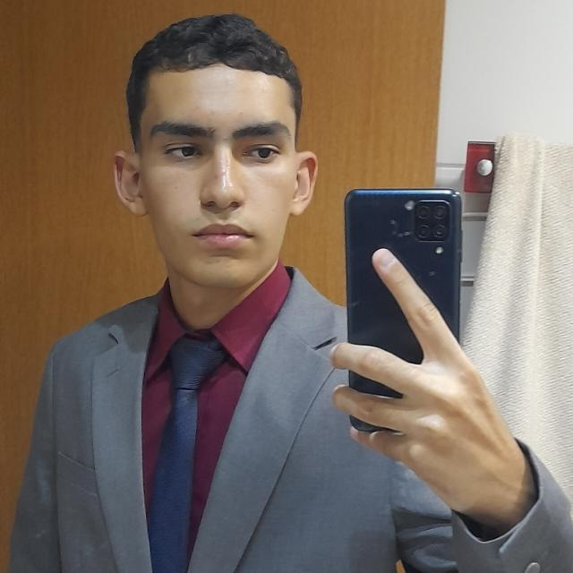

(61) 98250-3312
paulocjpaulo@gmail.com
O meu objetivo é desenvolver para a empresa solucionando os problemas em aplicações e desenvolvendo com o design centrado no usuário promovendo uma interface amigável para o usuário dos respectivos softwares.
Estudei o Ensino Médio no Colégio Marista Champagnat em Taguatinga - DF
Atualmente sou aluno do Curso de Ciência da Computação pela Universidade Católica de Brasília - UCB
Curso de Inglês pelo Centro Interescolar - CILT
Fiz o curso de Design Thinking na Prática em Março de 2026 para que pudesse desenvolver soluções centradas no usuário.
Fiz o curso de Figma em Março de 2026, para fazer a prototipagem de soluções antes de criá-las.
Sou catequista desde 2024, o que me ajuda na habilidade de trabalhar em equipes, comunicação e liderança.
Joguei basquete durante esse período, mas ainda jogo como um hobby.